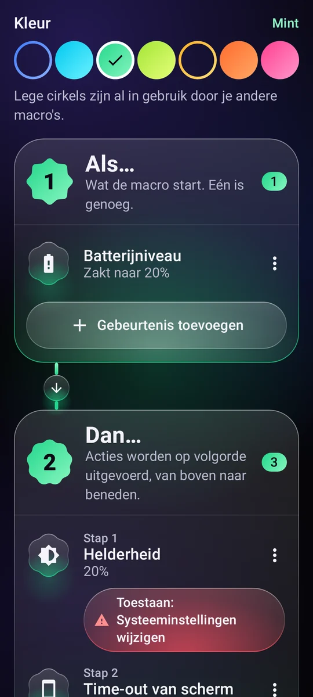
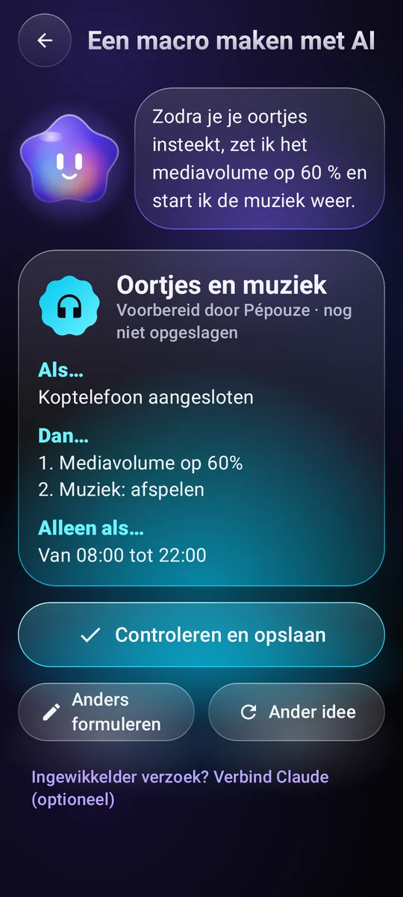
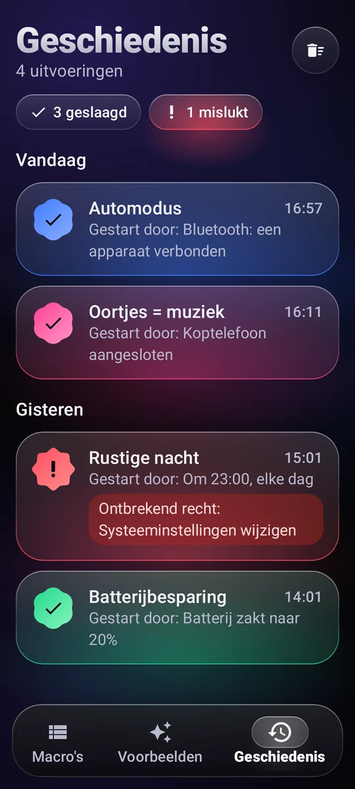

Wat de macro start
Een tijdstip en dagen, wifi, bluetooth, je oordopjes, de oplader, het batterijniveau, het scherm dat aangaat, een app die opent…
11 triggersAutomatisering voor Android
Schrijf een simpele regel, ‘Als… Doe…’, en je telefoon regelt het zelf, precies op het juiste moment.
Hoe het werkt
Elke macro past in één zin. Je bouwt hem op uit drie blokken, zonder te programmeren.
Een tijdstip en dagen, wifi, bluetooth, je oordopjes, de oplader, het batterijniveau, het scherm dat aangaat, een app die opent…
11 triggersVolume, beltoon, Niet storen, helderheid, zaklamp, muziek, wekker, timer, melding, een tekst hardop laten voorlezen, een app of link openen, op een tekst op het scherm tikken…
29 acties om te combinerenEen tijdvak, dagen van de week, een batterijniveau, de telefoon aan de lader.

Voorbeelden
Kopieer een voorbeeld, pas het aan en klaar. Hier zijn er een paar.
Zodra de bluetooth van de auto verbindt, gaat het volume omhoog en speelt de muziek verder.
Om 23.00 uur gaat Niet storen aan, zakt de helderheid naar het minimum en stopt de muziek.
Onder 20% batterij wordt het scherm minder fel en gaat het sneller uit.
Als je je oordopjes aansluit, begint de muziek op een zacht volume.
Als je 's ochtends de oplader loskoppelt, vertelt je telefoon hoe laat het is en hoe vol de batterij is.
Van zondag tot en met donderdag om 22.30 uur een zachte herinnering om je telefoon weg te leggen, en het scherm wordt minder fel.

Pépouze, je assistent
Beschrijf in één zin wat je wilt. Pépouze maakt de macro, jij controleert hem en slaat hem op.
Jij‘Als ik mijn oordopjes aansluit, zet de muziek dan op 60%’
Delen en starten
Wissel ideeën uit met de community en start je macro's zonder de app zelfs maar te openen.
Een bibliotheek met macro's die gebruikers delen. Kopieer degene die je leuk vindt, publiceer je eigen. Bekijk de community
Laat hem aan een vriend zien, zet hem in een video: elke camera opent hem en Pépouze importeert hem.
Een widget op je startscherm, een tegel in de snelle instellingen of een snelkoppeling: de macro start meteen.
Pépouze spreekt 13 talen en begrijpt je verzoeken direct op je telefoon.
Jij houdt de regie
Elke uitvoering wordt bijgehouden, gelukt of niet, samen met wat hem startte.
Een recht wordt pas gevraagd als een macro het nodig heeft, met uitleg erbij.
Op Google Drive of op je telefoon, zonder account. Of online, met een account.
Je macro's staan op je telefoon. Geen bezoekersstatistieken, geen gegevens verkocht.

Prijs
Geen advertenties, geen abonnement, geen addertje: Pépouze is een onafhankelijk project.
€ 0
Vragen
Alleen voor wat je zelf aan je macro's toevoegt: op een tekst op het scherm tikken, op Terug of Home drukken, het scherm vergrendelen, een screenshot maken, weten welke app er opent.
De tekst op het scherm wordt alleen gelezen om de tekst te vinden waarop getikt moet worden, en er verlaat niets je telefoon. Pépouze doet alleen wat in jouw regels staat. De service gaat pas aan met jouw akkoord, na een aparte uitleg, en je kunt hem op elk moment uitzetten.
Nee. Een account dient alleen om je macro's online te back-uppen. Je kunt ze ook zonder account in een bestand opslaan, op Google Drive of op je telefoon.
Ja, de meeste wel: Pépouze luistert op de achtergrond naar gebeurtenissen. Zodat Android de app niet in slaapstand zet, kies je ‘Batterij: onbeperkt’ op de app-pagina in de Android-instellingen. Acties die het scherm aanraken, werken alleen als je telefoon ontgrendeld is.
Nee. De actie ‘Sms voorbereiden’ opent je berichten-app met het nummer en de tekst klaar: jij tikt zelf op Verzenden.
In de app: Mijn account → Mijn account verwijderen. Zonder de app volg je de pagina over het verwijderen van je account.
Gratis op Android, zonder advertenties.
Pépouze komt binnenkort. Probeer het als eerste: stuur ons een bericht en we sturen je de uitnodiging.